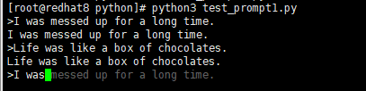

Python运维学习笔记-打造命令行工具
记录一些基础知识学习笔记。学习教材：《Python Linux系统管理与自动化运维》（赖明星著）
与命令行相关的Python语言特性
使用sys.argv获取命令行参数
在Python中，sys库下有一个名为argv的列表，保存了所有的命令行参数。例如下面的Python文件导入sys库，然后打印argv列表中的内容：
from __future__ import print_function
import sys
print(sys.argv)
对上面文件进行运行测试：
[root@redhat8 python]# python3 test_argv.py
['test_argv.py']
[root@redhat8 python]# python3 test_argv.py localhost 9527
['test_argv.py', 'localhost', '9527']
说明：
- 如果不传递任何参数，则
sys.argv有且仅有一个元素，即Python程序名字 - 如果传递其它命令行参数时，所有的参数都以字符串的形式保存到
sys.argv中 from __future__ import print_function在Python2的环境是使用Python3语句,我使用环境就是Python3，后续都不会加了，主要是print用法的区别
sys.argv是一个保存命令行参数的普通列表，可以直接修改sys.argv的内容，示例如下：
import os
import sys
def main():
sys.argv.append("")
filename = sys.argv[1]
if not os.path.isfile(filename):
raise SystemExit(filename + ' does not exists')
elif not os.access(filename, os.R_OK)
raise SystemExit(filename + 'is not accessible')
else:
print(filename + ' is accessible')
if __name__ == '__main__'
main()
示例说明：
- 示例中，从命令行参数获取文件的名称，然后判断文件是否存在
- 如果文件不存在，则提示用户该文件不存在
- 如果文件存在，则使用os.access函数判断是否具有对文件的读权限
- 示例中通过
sys.argv[1]获取文件的名称- 如果用户直接运行程序不传递任何命令行参数，会出现索引越界的错误
- 避免此错误在访问
sys.argv之前向其添加了一个空字符串sys.argv.append("") - 无论用户是否提供了命令行参数，在添加空字符串之后，访问
sys.argv[1]都不会报错 - 如果用户传递了命令行参数，
sys.argv[1]得到的是用户提供的命令行参数
使用sys.stdin和fileinput读取标准输入
使用sys.stdin
在Python标准库的sys库中，有stdin（标准输入）、stdout（标准输出）和stderr（错误输出）三个文件描述符。不需要调用open函数就可以直接使用，例如下面的read_stdin.py文件从标准输入中读取内容，然后打印到命令行终端：
import sys
for line in sys.stdin:
print(line,end="")
像shell脚本一样，通过标准输入给该程序输入内容：
root@redhat8 python]# cat /etc/passwd |python3 read_stdin.py
root:x:0:0:root:/root:/bin/bash
...
[root@redhat8 python]# python3 read_stdin.py < /etc/passwd
root:x:0:0:root:/root:/bin/bash
...
[root@redhat8 python]# python3 read_stdin.py -
可以使用sys.stdin调用文件对象的方法，如调用read函数读取标准输入中的所有内容，如下示例调用readlines函数将标准输入的内容读取到一个列表中：
import sys
def get_content():
return sys.stdin.readlines()
print(get_content())
使用fileinput
在Linux下，可以使用Python语言替代awk进行数据处理，awk对多文件处理提供了支持，在Python中可以使用fileinput进行多文件处理，可以依次读取命令行参数中给出的多个文件，fileinput会遍历sys.argv[1:]列表,如果列表为空，默认读取标准输入中的内容。例如文件read_from_fileinput.py：
#!/usr/bin/python3
import fileinput
for line in fileinput.input():
print(line,end="")
示例说明：
- 示例中直接调用了fileinput模块的input方法按行读取内容
- 示例中先导入了fileinput模块，然后在for循环中遍历文件的内容
fileinput既可以从标准输入中读取数据，也可以从文件中读取数据，示例：
[root@redhat8 python]# cat /etc/passwd |python3 read_from_fileinput.py
root:x:0:0:root:/root:/bin/bash
...
[root@redhat8 python]# python3 read_from_fileinput.py < /etc/passwd
root:x:0:0:root:/root:/bin/bash
...
[root@redhat8 python]# python3 read_from_fileinput.py /etc/passwd
root:x:0:0:root:/root:/bin/bash
...
[root@redhat8 python]# python3 read_from_fileinput.py /etc/passwd /etc/hosts
root:x:0:0:root:/root:/bin/bash
...
127.0.0.1 localhost localhost.localdomain localhost4 localhost4.localdomain4
::1 localhost localhost.localdomain localhost6 localhost6.localdomain6
fileinput提供了一些方法告知当前所读取的内容属于哪一个文件：
- filename：当前正在读取的文件名
- fileno：文件的描述符
- fileineno：正在读取的行是当前文件的第几行
- isfirstlin：正在读取的行是否当前文件的第一行
- isstdin fileinput：正在读取文件还是直接从标准输入读取内容
这些方法的使用示例：
#!/usr/bin/python3
import fileinput
for line in fileinput.input():
mate = [fileinput.filename(),fileinput.fileno(),fileinput.filelineno(),fileinput.isfirstlin(),fileinput.isstdin()]
print(*mate.end="")
print(*line.end="")
使用SystemExit异常打印错误信息
sys.stdout与sys.stderr使用方法与sys.stdin类似，下面是示例分别使用sys.stdout与sys.stderr输出内容，文件名为test_stdout_stderr.py:
import sys
sys.stdout.write('Captain')
sys.stderr.write('American')
通过重定向来验证'Captain'被输出到了标准输出，'American'被输出到了错误输出，示例如下：
[root@redhat8 python]# python3 test_stdout_stderr.py > /dev/null
American
[root@redhat8 python]# python3 test_stdout_stderr.py 2> /dev/null
Captain
一般情况下，不会直接用sys.stdout来输出内容，如果Python程序执行是被，需要在标准错误中输出错误信息，然后以非零的返回码退出程序，示例：
import sys
sys.stderr.write('error message')
sys.exit(1)
也可以直接爆出一个SystemExit异常，示例如下：
[root@redhat8 python]# cat test_system_exit.py
raise SystemExit("Error Message")
[root@redhat8 python]# python3 test_system_exit.py
Error Message
[root@redhat8 python]# echo $?
1
使用getpass库读取密码
getpass主要包含getuser函数和getpass函数，前者用于从环境变量中获取用户名，后者用于等待用户输入密码，和input区别在于不会将输入显示在命令行中，使用示例：
import getpass
user = getpass.getuser('Please input your username: ')
passwd = getpass.getpass('Please input your passwor: ')
print(user,passwd)
使用ConfigParser解析配置文件
一个典型的配置文件包含一到多个（section），每个章节下面可以包含一个或多个选项（option），里面下面的MySQL配置文件：
[client]
port = 3306
user = mysql
password = mysql
host = 127.0.0.1
[mysqld]
basedir = /usr
datadir = /var/lib/mysql
tmpdir = /tmp
skip-external-locking
在Python3中，ConfigParse模块重命名为configparser，使用有细微差异。要解析一个配置文件，需先创建一个ConfigParse对象（名称自定义），然后用read方法读取配置文件，也可以使用readfp从一个已经打开的文件中读取配置：
import configparser
cf = configparser.ConfigParser(allow_no_value=True)
cf.read('my.cnf')
参数allow_no_value默认取值是False，表示配置文件中是否允许选项没有值的情况，之前配置文件中skip-external-locking选项只有名称没有选区制，所有需指定allow_no_value值为True。ConfigParser中有很多方法，如下：
- sections：返回一个包含所有章节的列表
- has_section：判断章节是否存在
- items：以元组的形式返回所有选项
- options：返回一个包含章节下所有选项的列表
- get,getboolean,gitint,getfloat：获取选项的值
- remove_section：删除一个章节
- add_setcion：添加一个章节
- remote_option：删除一个选项
- set：添加一个选项
- write将ConfigParser对象中的数据保存到文件中
以之前的MySQL配置文件为例，测试各种方法的使用：
import configparser
cf = configparser.ConfigParser(allow_no_value=True)
cf.read('my.cnf')
print(cf.get('client', 'host'))
print(cf.sections())
print(cf.has_section('client'))
cf.remove_option('mysqld','tmpdir')
cf.remove_section('client')
cf.add_section('mysql')
cf.set('mysql','host','127.0.0.1')
cf.write(open('new_my.cnf','w'))
运行示例如下：
[root@redhat8 python]# python3 configparse_test.py
127.0.0.1
['client', 'mysqld']
True
[root@redhat8 python]# cat new_my.cnf
[mysqld]
basedir = /usr
datadir = /var/lib/mysql
skip-external-locking
[mysql]
host = 127.0.0.1
使用argparse解析命令行参数
在Python中，argparse是标准库中用来解析命令行参数的模块，能够根据程序中的定义从sys.argv中解析参数，并自动生成帮助和使用信息。
ArgumentParse解析器
创建解析器方式如下：
import argparse
parser = argparse.ArgumentParser()
ArgumentParser类的初始化函数有多个参数，比较常用的是description，是程序的描述信息，即帮助信息前的文字。为应用程序添加参数选项需要用ArgumentParser对象的add_argument方法，方法格式如下：
add_argument(name or flags...[, action][, nargs][, const][, default][, type][, choices][, required][, help][, metavar][, dest])
各参数含义：
- name/flags：参数的名字；
- action：遇到参数时的动作，默认值时store
- nargs：参数的个数，可以是具体的数组，或者“+”号（表示0或霍格参数）与“*”号（表示1或霍格参数）
- const action 和 nargs：需要的常量值
- default：不指定参数时的默认值
- type：参数的类型
- choices：参数允许的值
- required：可选参数是否可以省略
- help：参数的帮助信息
- metavar：在usage说明中的参数名称
- dest：解析后的参数名称
示例以后用实例演示。
模仿MySQL客户端的命令行参数
MySQL几乎没接触，以后用到了再看。
使用logging记录日志
记录日志的两个目的：
- 诊断日志：记录与应用程序操作相关的日志
- 审计日志：为商业分析而记录的日志
Python的logging模块
直接导入logging模块，调用它的debug,info,warn,error和critical等函数记录日志。默认情况下打印WARRNING级别或更高级别日志到屏幕。示例如下：
#!/usr/local/bin/python
import logging
logging.debug('debug message')
logging.info('info meeeage')
logging.warn('warn message')
logging.error('error message')
logging.critical('critical message')
执行后示例如下：
[root@redhat8 python]# python3 logging_test.py
WARNING:root:warn message
ERROR:root:error message
CRITICAL:root:critical message
各个日志级别的含义：
| 日志级别 | 权重 | 含义 |
|---|---|---|
| CRITICAL | 50 | 严重错误，表面软件已经不能继续运行了 |
| ERROR | 40 | 发生了严重的错误，必须马上处理 |
| WARNING | 30 | 应用程序可以容忍这些信息，软件还在正常工作，但是应该即使修复，避免后续发生问题 |
| INFO | 20 | 证明事情按预期工作，突出强调应用程序的运行过程 |
| DEBUG | 10 | 详细信息，只有开发人员调试程序时才需要关注的事情 |
配置日志格式
在使用logging记录日志之前，可以进行一些简单的配置，如下所示：
#!/usr/local/bin/python
# -*- coding:utf-8 -*-
import logging
logging.basicCconfig(filename='app.log',level=logging.INFO)
logging.debug('debug message')
logging.info('info meeeage')
logging.warn('warn message')
logging.error('error message')
logging.critical('critical message')
执行程序，会在当前目录下产生一个app.log文件，文件中记录INFO及更高级别的日志信息。示例中使用basicCconfig进行了简单的配置，还可以进行更加复杂的日志配置：
- Logger：日志记录器，是应用程序中能直接使用的接口
- Handler：日志处理器，用以表明将日志保存到什么地方以及保存多久
- Formatter：格式化，用以配置日志的输出格式
下面是一个在Python源码中配置日志的示例：
#!/usr/local/bin/python
# -*- coding:utf-8 -*-
import logging
logging.basicCconfig(
level=logging.DEBUG,
format='%(asctime)s : %(levelname)s : %(message)s',
filename="app.log"
)
logging.debug('debug message')
logging.info('info meeeage')
logging.warn('warn message')
logging.error('error message')
logging.critical('critical message')
对于复杂的项目，一般将日志配置保存到配置文件中，例如下面配置文件：
[loggers]
keys = root
[handlers]
keys = logfile
[formatters]
keys = generic
[logger_root]
handlers = logfile
[handler_logfile]
class = handlers.TimeRotatingFileHandler
args = ('app.log','midnight',1,10)
level = DEBUG
fomatter = generic
[fomatter_generic]
format=%(asctime)s %(levelname)-5.5s [%(name)s:%(lineno)s] %(message)s
配置说明：
- 在[loggers]中声明一个名为root的logger
- 在[handlers]中声明一个名为logfile的handler
- 在[formatters]中声明一个名为generic的formatter
- 在[logger_root]中定义root这个logger所使用的handler
- 在[handler_logfile]中定义handler输出日志的方式、日志文件的切换时间等
- 最后在[fomatter_generic]定义了日志的格式，包括日志产生时间、日志级别、产生日志文件名和行号等信息
在Python中，使用logging.config模块的fileConfig函数加载日志配置，如下所示：
#!/usr/local/bin/python
# -*- coding:utf-8 -*-
import logging
import logging.config
logging.config.fileConfig('logging.cnf')
logging.debug('debug message')
logging.info('info meeeage')
logging.warn('warn message')
logging.error('error message')
logging.critical('critical message')
与命令行相关的开源项目
学习两个与命令行工具相关的开源项目。官方网站：https://click.palletsprojects.com/en/5.x/
使用click解析命令行参数
Click是Flask的作者开发的一个第三方模块，用于快速创建命令行。作用与argparse相同，但使用更加简单。在使用前需要先安装：
# pip install click
使用click步骤：
- 使用
@click.command()装饰一个函数，使之成为命令行接口 - 使用
@click.option()等装饰函数，为其添加命令行选项等
使用Click官方文档中的示例：
import click
@click.command()
@click.option('--count',default=1,help='Number of greetings.')
@click.option('--name',prompt='Your name',help='The person to gteet.')
def hello(count,name):
"""Simple prigram that greets NAME for a total of COUNT times."""
for x in range(count):
click.echo('Hello %s!' % name)
if __name__ == '__main__':
hello()
示例说明：
- 示例中，函数hello接收两个参数，它们的取值从命令行中获取
- 示例中使用ckick模块中的command、option和echo：
- command：使函数hello成为命令行接口
- option：增加命令行选项
- echo：输出结果，使用echo是为了获取更好兼容性，在python2中print是一个语句，而python3中是一个函数
- 在option中使用了prompt函数，当没有直接指定name参数时，会提示在交互模式下输入
运行示例：
[root@redhat8 python]# python3 test_click.py
Your name: redhat
Hello redhat!
[root@redhat8 python]# python3 test_click.py --count 2
Your name: ROOT
Hello ROOT!
Hello ROOT!
click和argparse一样，会自定产生帮助信息：
[root@redhat8 python]# python3 test_click.py --help
Usage: test_click.py [OPTIONS]
Simple prigram that greets NAME for a total of COUNT times.
Options:
--count INTEGER Number of greetings.
--name TEXT The person to gteet.
--help Show this message and exit.
option常用的设置参数如下：
- default：设置命令行参数的默认值
- help：参数说明
- type：参数类型，可以是string、int、float等
- prompt：档名和中没有输入相应参数时，会根据prompt提示用户输入
- nargs：指定命令行参数接受的值的个数
如果命令行参数只能取固定的几个值之一，可以使用Choice函数，Choice函数的参数是一个列表，列表中列出所有的可能值，示例如下：
import click
@click.command()
@click.option('--hash_type',type=click.Chioce(['md5','shal']))
def digest(hash_type):
click.echo(hash_type)
如果需要输入密码，设置prompt为True就能交互式输入密码，hide_input为True可以隐藏命令行输入，设置confirmation_prompt为True可以进行密码两次验证，示例如下：
import click
@click.command()
@click.option('--password',prompt=True,hide_input=True,confirmation_prompt=True)
def encrypt(password):
click.echo('Encrypting password to %s' % password.encode('rot13'))
if __name__ == '__main__':
encrypt()
运行示例（会提示unknown encoding:rot13，应该是RHEL8中没有）：
[root@redhat8 python]# python3 test_click_1.py
Password:
Repeat for confirmation:
在Bash中有fc命令编辑比较长的输入，比如输错了一个较长的命令，可以运行fc命令打开一个编辑器，编辑器保存了上一条命令内容，编辑修复错误的输入，退出后会自动运行编辑后的命令。使用Click也可以实现类似的功能，如下所示：
import click
message = click.edit()
print(message,end="")
使用prompt_toolkit打造交互式命令行工具
prompt_toolkit是一个处理交互式场景的开源库，用来取代开源的readline与curses，prompt_toolkit有很多高级功能，特性如下：
- 语法高亮
- 支持多行编辑
- 支持代码补全
- 支持自动提示
- 可以使用鼠标移动光标
- 支持Emacs与Vi风格的快捷键
- 支持查询历史
- 对Unicode支持友好
- 使用Python语言开发，跨平台
使用之前需要先安装：
[root@redhat8 ~]# pip install prompt_toolkit
下面示例是Python开发的REPL（读取-求值-输出）应用,用户输入数据，Python程序打印用户的输入：
while True:
user_input = raw_input('>')
print(user_input)
示例中，无法使用任何Linux下的快捷键，退格或删除都会出现问题，使用prompt_toolkit中的prompt函数来接受输入，就可以使用bash下的常用快捷键：
from prompt_toolkit import prompt
while True:
user_input = prompt('>')
print(user_input)
使用示例：
[root@redhat8 python]# python3 test_prompt.py
>Miracles happen every day.
Miracles happen every day.
prompt_toolkit也可以实现查找历史的功能，使用prompt_toolkit.history模块下的FileHistory类，然后调用prompt时构造的FileHistory对象，并传递给history参数：
from __future__ import unicode_literals
from prompt_toolkit import prompt
from prompt_toolkit.history import FileHistory
while True:
user_input = prompt('>',
history=FileHistory('history.txt')
)
print(user_input)
还可以利用历史输入的数据，在用户输入时进行自动提示，在调用prompt函数时指定auto_suggest参数即可：
from __future__ import unicode_literals
from prompt_toolkit import prompt
from prompt_toolkit.history import FileHistory
from prompt_toolkit.auto_suggest import AutoSuggestFromHistory
while True:
user_input = prompt('>',
history=FileHistory('history.txt'),
auto_suggest=AutoSuggestFromHistory()
)
print(user_input)
输入两行字符串，随后输入匹配的历史输入时，就会以暗色字体显示匹配的历史输入，回车即可自动输入，运行示例如下图：

bash中tab键补全会选择提示的内容，使用prompt_toolkit中一个名为WordCompleter的函数即可实现，会将用户输入与可能建议的字典进行匹配，并提供一个列表，使用tab键从列表中进行选项，示例如下：
from __future__ import unicode_literals
from prompt_toolkit import prompt
from prompt_toolkit.history import FileHistory
from prompt_toolkit.auto_suggest import AutoSuggestFromHistory
from prompt_toolkit.contrib.completers import WordCompleter
SQLCompleter = WordCompleter(['select','from','insert','update','delete','drop'],ignore_case=True)
while True:
user_input = prompt('>',
history=FileHistory('history.txt'),
auto_suggest=AutoSuggestFromHistory(),
completer=SQLCompleter
)
print(user_input)
在python3中运行后提示无法import WordCompleter，查了下可能时兼容性问题。